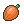

Berries
All 57 berries with their effect, their flavor for Pokéblocks and the places where their trees grow.
| Berry | Effect | Flavor | Berry trees | Also |
|---|---|---|---|---|
| A hold item that heals paralysis in battle. | spicy 10 | Route 31, Violet City, Route 104, Route 103 | 3 more places | |
| A hold item that awakens Pokémon in battle. | dry 10 | Route 37, Route 42, Route 116, Route 121 | 3 more places | |
| A hold item that heals poisoning in battle. | sweet 10 | Route 33, Azalea Town, Route 104, Route 102, Route 112, Route 123, Route 120 | 9 more places | |
| Rawst Berry | A hold item that heals a burn in battle. | bitter 10 | Route 38, Route 39, Route 112, Route 123, Route 121 | 1 more place |
| Aspear Berry | A hold item that defrosts Pokémon in battle. | sour 10 | Route 44, Route 45, Route 121, Route 120 | 1 more place |
| A hold item that restores 10 PP in battle. | spicy 10, sweet 10, bitter 10, sour 10 | Route 43, Route 104, Route 103, Route 119, Route 123 | 2 more places | |
| A hold item that restores 10 HP in battle. | spicy 10, dry 10, sweet 10, bitter 10, sour 10 | Route 29, Route 30, Route 104, Route 102, Route 111 | 3 more places | |
| A hold item that heals confusion in battle. | spicy 10, dry 10, sweet 10, bitter 10, sour 10 | Route 36, Route 35, Route 114, Route 121 | 2 more places | |
| A hold item that heals any status problem in battle. | spicy 10, dry 10, sweet 10, bitter 10, sour 10 | Fuchsia City, Route 46 | 3 more places | |
| A hold item that restores the user's HP a little. | spicy 10, dry 10, sweet 10, bitter 10, sour 10 | Route 1, Route 26, Route 47, Route 118, Route 119, Route 123 | 3 more places | |
| A hold item that restores HP but may confuse. | spicy 10 | — | 1 more place | |
| A hold item that restores HP but may confuse. | sour 10 | — | 1 more place | |
| POKéBLOCK ingredient. Plant in loamy soil to grow Razz. | spicy 10, dry 10 | Route 111, Route 120 | 2 more places | |
| POKéBLOCK ingredient. Plant in loamy soil to grow Bluk. | dry 10, sweet 10 | Route 115 | 1 more place | |
| POKéBLOCK ingredient. Plant in loamy soil to grow Nanab. | sweet 10, bitter 10 | Route 110, Route 121, Route 120 | 1 more place | |
| POKéBLOCK ingredient. Plant in loamy soil to grow Wepear. | bitter 10, sour 10 | Route 117, Route 120 | 1 more place | |
| POKéBLOCK ingredient. Plant in loamy soil to grow Pinap. | spicy 10, sour 10 | Route 116, Route 120 | 1 more place | |
| Makes a Pokémon friendly but lowers base HP. | spicy 10, sweet 10, bitter 10 | Pewter City, Route 3, Route 119, Route 123 | — | |
| Makes a Pokémon friendly but lowers base Attack. | dry 10, bitter 10, sour 10 | Route 24, Route 25, Route 115 | — | |
| Makes a Pokémon friendly but lowers base Defense. | spicy 10, sweet 10, sour 10 | Route 13, Fuchsia City, Route 123 | — | |
| Makes a Pokémon friendly but lowers base Sp. Atk. | spicy 10, dry 10, bitter 10 | Celadon City, Route 16, Route 119 | — | |
| Makes a Pokémon friendly but lowers base Sp. Def. | dry 10, sweet 10, sour 10 | Route 6, Route 11, Route 123 | — | |
| Makes a Pokémon friendly but lowers base Speed. | spicy 20, dry 10 | Route 4, Route 8, Route 7 | — | |
| POKéBLOCK ingredient. Plant in loamy soil to grow Spelon. | spicy 40, dry 10 | — | 1 more place | |
| POKéBLOCK ingredient. Plant in loamy soil to grow Pamtre. | dry 40, sweet 10 | — | 1 more place | |
| POKéBLOCK ingredient. Plant in loamy soil to grow Watmel. | sweet 40, bitter 10 | — | 1 more place | |
| POKéBLOCK ingredient. Plant in loamy soil to grow Durin. | bitter 40, sour 10 | — | 1 more place | |
| POKéBLOCK ingredient. Plant in loamy soil to grow Belue. | spicy 10, sour 40 | — | 1 more place | |
| A hold item that weakens a Normal move. | dry 25, sweet 10 | — | 1 more place | |
 Occa Berry | A hold item that weakens a Fire move if weak to it. | spicy 15, sweet 10 | — | 1 more place |
| A hold item that weakens a Water move if weak to it. | dry 15, bitter 10 | — | 1 more place | |
| A hold item that weakens a Electric move if weak to it. | sweet 15, sour 10 | — | 1 more place | |
| A hold item that weakens a Grass move if weak to it. | spicy 10, bitter 15 | — | 1 more place | |
| A hold item that weakens a Ice move if weak to it. | dry 10, sour 15 | — | 1 more place | |
| A hold item that weakens a Fighting move if weak to it. | spicy 15, bitter 10 | — | 1 more place | |
| A hold item that weakens a Poison move if weak to it. | dry 15, sour 10 | — | 1 more place | |
| A hold item that weakens a Ground move if weak to it. | spicy 10, sweet 15 | — | 1 more place | |
| A hold item that weakens a Flying move if weak to it. | dry 10, bitter 15 | — | 1 more place | |
| A hold item that weakens a Psychic move if weak to it. | sweet 10, sour 15 | — | 1 more place | |
| A hold item that weakens a Bug move if weak to it. | spicy 20, sour 10 | — | 1 more place | |
| A hold item that weakens a Rock move if weak to it. | spicy 10, dry 20 | — | 1 more place | |
| A hold item that weakens a Ghost move if weak to it. | dry 10, sweet 20 | — | 1 more place | |
| A hold item that weakens a Dragon move if weak to it. | sweet 10, bitter 20 | — | 1 more place | |
| A hold item that weakens a Dark move if weak to it. | bitter 10, sour 20 | — | 1 more place | |
| A hold item that weakens a Steel move if weak to it. | spicy 25, dry 10 | — | 1 more place | |
| A hold item that weakens a Fairy move if weak to it. | sweet 25, bitter 10 | — | 1 more place | |
| Liechi Berry | A hold item that raises Attack in a pinch. | spicy 40, sweet 40, sour 10 | Route 130 | — |
| A hold item that ups the critical-hit rate in a pinch. | spicy 10, dry 10, sweet 10, bitter 10, sour 10 | — | 1 more place | |
| A hold item that sharply boosts a stat in a pinch. | spicy 10, dry 10, sweet 10, bitter 10, sour 10 | — | 1 more place | |
| A hold item that heals from super effective moves. | spicy 40, dry 10 | — | 1 more place | |
| When held, it ups the Accuracy of a move in a pinch. | dry 40, sweet 10 | — | 1 more place | |
| It allows a Pokémon in a pinch to move first just once. | sweet 40, bitter 10 | — | 1 more place | |
| Jaboca Berry | If hit by a physical move, it will hurt the attacker a bit. | bitter 40, sour 10 | — | 1 more place |
| If hit by a special move, it will hurt the attacker a bit. | spicy 10, sour 40 | — | 1 more place | |
| If hit by a physical move, it raises the Defense a bit. | spicy 30, dry 30, sweet 10, bitter 10, sour 10 | — | 1 more place | |
| If hit by a special move, it raises the Sp. Def. a bit. | spicy 10, dry 10, sweet 30, bitter 30, sour 10 | — | 1 more place | |
| POKéBLOCK ingredient. Plant in loamy soil to grow a mystery. | spicy 40, dry 40, sweet 40, bitter 40, sour 40 | — | 1 more place |